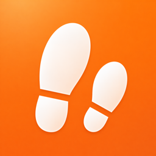

5herlock
Ennéagramme famille
Parent, enfant : se comprendre.
5herlock vous aide à comprendre votre enfant tel qu'il est, pas tel que vous l'imaginez. Il vous aide aussi à mieux comprendre l'autre parent, et vous-même.
Pour iPhone, en français et en anglais. Gratuit, sans publicité, sans abonnement.
Ce que fait l'application
L'application s'appuie sur l'Ennéagramme : neuf manières d'être au monde, aucune meilleure qu'une autre. Pas une étiquette, une carte. Pour voir ce qui se joue chez l'autre, et ajuster votre réponse.
Quiz
Un test qui s'adapte à vos réponses. Pour vous, pour votre enfant (un test pensé à partir de 10 ans) ou pour un proche.
Votre enfant n'est pas un petit vous
Quand votre propre type arrive en tête du résultat de votre enfant, ou juste derrière, l'application vous le signale : ce type peut venir de votre regard autant que de votre enfant.
Deux regards
L'autre parent répond au même test sur votre téléphone, sans voir vos réponses. Vos deux regards sont comparés, puis combinés. Un proche peut aussi répondre à quelques questions sur vous, et son regard est comparé au vôtre.
Duo, profils et carte de famille
Pour chaque paire de types, ce qui circule et ce qui accroche, avec des conseils concrets. Pour un enfant, des repères selon son âge et trois clés pour l'accompagner. Et votre foyer vu comme un système.
Testez-vous et Mon journal
Un jeu de détective pour apprendre à reconnaître les neuf types à travers 45 personnalités connues. Et chaque jour, une question sur votre vie de parent.
Sans compte pour commencer
Le quiz, le Duo et le jeu s'ouvrent tout de suite, sans compte. Un compte Apple ou Google n'est demandé que pour enregistrer votre famille et votre journal. Ce que vous avez déjà fait est conservé.
Sans compte, vos résultats sont enregistrés en ligne (Google Firebase) sous un identifiant anonyme, sans email ni nom.
Support
Une question, un problème, une idée pour améliorer l'app : écrivez à contact@thomasdeillon.com.
Zone sensible
Supprimer vos données
Vous pouvez tout supprimer vous-même, depuis l'application.
- Ouvrez l'onglet « Accueil ».
- Touchez l'icône 👤 en haut à droite : l'écran « Mon compte » s'ouvre.
- Avec un compte, touchez « Supprimer mon compte ». Sans compte, touchez « Effacer mes données ».
- Confirmez deux fois : « Supprimer définitivement », puis « Oui, supprimer ».
Avec un compte, l'application peut ensuite vous demander de confirmer votre identité avec le même compte Apple ou Google : la suppression se termine juste après. Si vous utilisez « Se connecter avec Apple », cette confirmation est toujours demandée : elle permet aussi de retirer 5herlock de votre compte Apple.
La suppression de votre compte efface définitivement vos profils, vos résultats de quiz, votre journal, votre historique et votre progression. Cette action est irréversible.
Par email : vous pouvez aussi demander la suppression à contact@thomasdeillon.com. Indiquez l'adresse affichée sous « Email » dans « Mon compte ». Vous recevrez une réponse sous 30 jours.
Sans compte, vos données ne sont liées à aucune adresse email : effacez-les depuis l'application, avec « Effacer mes données ».
Le détail des données enregistrées figure dans la politique de confidentialité.
Questions fréquentes
Faut-il un compte ?
Non, pas pour commencer. Le quiz, le Duo et le jeu s'ouvrent tout de suite. Un compte Apple ou Google n'est demandé que pour enregistrer votre famille et votre journal, et ne rien perdre en changeant de téléphone. Ce que vous avez déjà fait est conservé.
Qui répond au test de mon enfant, et à partir de quel âge ?
Vous, le parent : vous répondez pour votre enfant. Le test est pensé pour un enfant de 10 ans et plus. Plus jeune, sa personnalité est encore en train de se dessiner : prenez le résultat comme une piste, pas comme une étiquette.
Le résultat dit-il qui est mon enfant ?
Non. Un résultat est une piste, un point de départ pour en parler, jamais un verdict sur votre enfant. Chez l'enfant, le profil n'est pas figé : il se précise en grandissant. L'Ennéagramme n'est pas la seule grille de lecture, et il a ses limites. Prenez ce qui vous parle, laissez le reste.
Qui voit mes réponses et mon journal ?
Aucune donnée n'est vendue, et rien n'est partagé avec d'autres utilisateurs. Avec un compte, l'éditeur voit vos résultats de quiz dans un outil d'administration qui lui est réservé, pour faire fonctionner et améliorer l'application. Votre journal est privé : il est enregistré avec votre compte, n'apparaît pas dans cet outil et n'est partagé avec personne. Vous pouvez effacer une réponse du journal quand vous voulez. Le détail figure dans la politique de confidentialité.
L'application est-elle payante ?
Non. 5herlock est gratuit, sans publicité, sans abonnement.
English
Enneagram Parenting
Personality test for families.
5herlock helps you understand your child as they are, not as you imagine them. It also helps you understand the other parent, and yourself.
For iPhone, in English and French. Free, no ads, no subscription.
What the app does
The app draws on the Enneagram: nine ways of being in the world, none better than another. Not a label but a map: a way to see what is going on for the other person, and adjust how you respond.
Quiz
A test that adapts to your answers. For yourself, for your child (one test, designed for age 10 and over) or for someone close.
Your child is not a mini-you
When your own type comes out on top of your child’s result, or just behind it, the app points it out: that type may come from your lens as much as from your child.
Two views
The other parent takes the same test on your phone, without seeing your answers. Your two views are compared, then combined. Someone close can also answer a few questions about you, and their view is compared with yours.
Duo, profiles and family map
For any pair of types, what flows between them and where the friction lies, with practical advice. For a child, milestones for their age and three keys to support them. And your household seen as a system.
Case files and My journal
A detective game to learn to spot the nine types through 45 well-known figures. And one question a day about your life as a parent.
No account needed to start
The quiz, Duo and the game open straight away, with no account. You only need an Apple or Google account to save your family and your journal. Anything you have already done is kept.
Without an account, your results are saved online (Google Firebase) under an anonymous ID, with no email or name.
Support
A question, a problem, an idea to improve the app: write to contact@thomasdeillon.com.
Danger zone
Delete your data
You can delete everything yourself, from within the app.
- Open the “Home” tab.
- Tap the 👤 icon at the top right: the “My account” screen opens.
- With an account, tap “Delete my account”. Without an account, tap “Erase my data”.
- Confirm twice: “Delete permanently”, then “Yes, delete”.
With an account, the app may then ask you to confirm your identity with the same Apple or Google account: the deletion finishes right after. If you use Sign in with Apple, this confirmation is always requested: it also lets the app remove 5herlock from your Apple Account.
Deleting your account permanently erases your profiles, quiz results, journal, history, and progress. This action cannot be undone.
By email: you can also ask for deletion at contact@thomasdeillon.com. Give the address shown under “Email” in “My account”. You will get a reply within 30 days.
Without an account, your data is not linked to any email address: erase it from within the app, with “Erase my data”.
The privacy policy (in French) lists the data that is stored.
FAQ
Do I need an account?
No, not to get started. The quiz, Duo and the game open straight away. You only need an Apple or Google account to save your family and your journal, and lose nothing when you change phones. Anything you have already done is kept.
Who answers my child’s test, and from what age?
You do: you answer for your child. The test is designed for children aged 10 and over. Younger children are still taking shape: take the result as a lead, not a label.
Does the result say who my child is?
No. A result is a lead, a starting point for a conversation, never a verdict on your child. In children, a profile is not fixed: it sharpens as they grow. The Enneagram is not the only way to read people, and it has its limits. Take what speaks to you, leave the rest.
Who can see my answers and my journal?
No data is sold, and nothing is shared with other users. With an account, the publisher sees your quiz results in a private admin tool, to run and improve the app. Your journal is private: it is saved with your account, does not appear in that tool and is not shared with anyone. You can delete a journal answer whenever you like. The privacy policy has the details.
Does the app cost anything?
No. 5herlock is free, with no ads and no subscription.